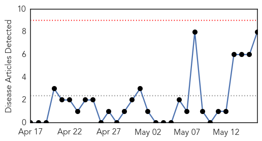
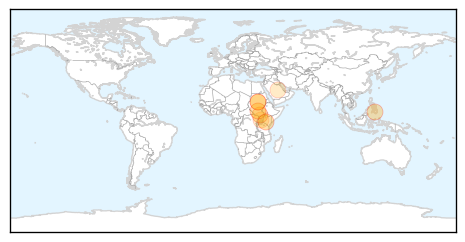
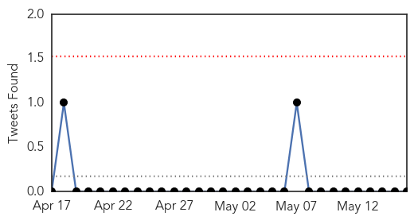

Cholera
30-Day Web Trend
0 alerts, 0 warnings

30-Day Twitter Trend
1 alerts, 0 warnings
Article Locations
Article Confidences
Top Articles:
- 1.000
- Cholera outbreak hits Juba: WHO - News
- 0.998
- Sudan Tribune: Plural news and views on Sudan
- 0.997
- Cholera hits South Sudan, 1 dead
- 0.940
- Health officers confirm cholera outbreak in NCotabato
- 0.916
- South Sudan hit by cholera outbreak
- 0.668
- South Sudan marks SPLA Day
- 0.664
- Eight dead hundreds ill from ?tainted water? in Philippines
- 0.622
- Neglected Tropical Disease in Uganda
Top Tweets:
- 0.645
- RT: @WHO this week cholera out break in nepal also.. where? how many cases?
Swine Flu
30-Day Web Trend
2 alerts, 0 warnings
30-Day Twitter Trend
0 alerts, 0 warnings

Article Locations
Article Confidences

Top Articles:
Top Tweets:
-
No tweets found for May 16, 2014